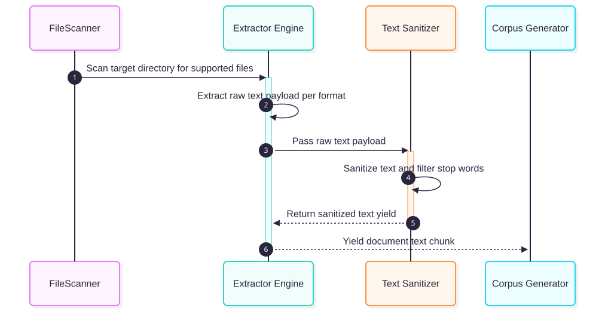

Core API Reference
This document outlines the core internal workflow and architecture of the Smart Autosorter system, detailing how extraction, analysis, and verification are coordinated.
Workflow Guide: Extractor and Analyzer
The system uses a two-phase pipeline to convert documents into structured sorting plans:


-
Extraction (
app.core.extractor):- The extractor reads raw files across multiple supported formats (TXT, CSV, PDF, DOCX, XLSX/XLS, plus images via OCR and audio via Whisper when the
mlextra is installed). - It maps each file to its raw text payload using robust exception-handling to ensure that a failure in one document does not crash the entire run.
build_corpus_generatorsubmits files to the shared worker pool and yields the extracted text in chunks of 50 to keep memory use low.build_corpus_generator_asyncis theasynciovariant used by the daemon.
- The extractor reads raw files across multiple supported formats (TXT, CSV, PDF, DOCX, XLSX/XLS, plus images via OCR and audio via Whisper when the
-
Analysis (
app.core.analyzer):- Extracted text chunks are fed incrementally into the
IncrementalAnalyzer. TfidfVectorizertransforms the text into sparse vectors; when the optional ONNX model is installed, sentence embeddings are used instead.MiniBatchKMeansgroups the vectors, and the strategy recurses into each group to build a hierarchical sorting plan with sub-folders where appropriate.- Each folder is named from its documents' top TF-IDF terms, or by a local LLM when AI-assisted naming is enabled.
- Extracted text chunks are fed incrementally into the
Multi-Study Clinical Ingestion Pipeline

Centralized In-Memory Caching Architecture

Concurrency & Worker Pool Model

Verifier Logic
Before any files are moved, VerificationEngine.verify_integrity (app.core.verifier) checks the sorting plan and reports problems by category:
- Collisions: two files planned for the same destination, or a destination whose parent path is blocked by a file.
- Circular renames: moves that would swap or cycle file names.
- Broken links: symlinks and Windows shortcuts whose targets would break after the moves.
- Escaping paths: destinations that would resolve outside the target folder.
- Long paths: destinations longer than 260 characters. The same limit is applied on every OS.
- Invalid or unconfirmed renames: proposed names with illegal characters or a changed extension, and renames the user hasn't confirmed.
It does not check free disk space or whether a source file is locked by another program; those failures surface during the move itself.
Module Definitions
Fast-Path Triage Engine (app.core.jev_classifier)
The JevClassifierEngine provides ultra-fast, local, non-generative document triage and classification designed to enforce a sub-150ms per-file SLA.
- In-Engine Fast Snippet Extraction: When callers omit pre-extracted
text_content, the engine automatically performs lightweight header snippet extraction directly from binary and PDF files under 10MB: .pdf: Reads page 0 text (up to 4096 characters) usingpypdf.PdfReader..docx: Reads initial paragraph text (up to 4096 characters) usingdocx.Document..xlsx: Reads initial rows from sheet 0 (up to 4096 characters) usingopenpyxl.load_workbook..xls: Reads initial rows from sheet 0 (up to 4096 characters) usingxlrd.open_workbook..pptx: Reads text from slide 0 (up to 4096 characters) usingpptx.Presentation.- Stream Descriptor Resilience: All document readers accept string or
Pathfile paths wrapped in explicitwith open(file_path, "rb") as f:binary context managers or internal stream lifecycle managers, ensuring file descriptors are released immediately and preventing file handle locking (WinError 32) on Windows platforms. - Rule-Based Triage & Caching: Combines category keyword and extension matching with two-tier in-memory caching (
BoundedMemoryCache), assigning sensitivity ratings, archival priorities, and confidence scores without invoking heavy LLM inference.